library(daymetr)
library(tidyverse)Data Basics
Learn the basics of manipulating data in R
In this workshop you will:
- Download climate data with daymetr
- Manipulate data with tidyverse:
- Format date elements
- Use
select()to choose variables from a data frame. - Use
filter()to choose data based on values. - Use
mutate()to create new variables. - Use
group_by()andsummarize()to work with subsets of data. - Use
full_join()to merge datasets
- Visualize data with ggplot2
- Learn to write basic functions
Data manipulation with tidyverse
Load the required libraries
What is the climate of Yale-Myers Forest?
Yale-Myers Forest is a 7,840 acre research forest in Connecticut. It is a hub for education, research, and harvesting operations within the Yale Forest School system. The forest primarily consists of mixed hardwoods on glacial till soils, featuring a significant presence of hemlock, scattered white pine stands from old field origins, and red pine plantations established in the 1940s.
To explore the climate of the area, download daily daymet data for (41.952909, -72.123859). Review the arguments for the download_daymet() function.
?download_daymet()To use the download_daymet() function you need the latitude, longitude, start (1990), and end (2018) years.
Yale.Myers.daymet <- download_daymet( lat = 41.952909,
lon = -72.123859,
start = 1990,
end = 2018)Downloading DAYMET data for: Daymet at 41.952909/-72.123859 latitude/longitude !Done !You now have a nested list that includes information on the site location. The true climate data is stored in the “data” part of the nested list. Pull the data out of the list and create a dataframe.
Yale.Myers <- as.data.frame(Yale.Myers.daymet$data)Look at the dataframe:
head(Yale.Myers ) year yday dayl..s. prcp..mm.day. srad..W.m.2. swe..kg.m.2. tmax..deg.c.
1 1990 1 32422.37 0.00 179.64 15.20 5.15
2 1990 2 32467.03 0.00 200.25 14.94 3.11
3 1990 3 32515.34 0.00 242.26 14.37 7.38
4 1990 4 32567.27 2.22 184.50 13.49 8.79
5 1990 5 32622.77 0.00 194.86 12.06 5.58
6 1990 6 32681.80 0.00 218.59 11.97 3.72
tmin..deg.c. vp..Pa.
1 -2.31 515.41
2 -5.39 408.97
3 -4.64 432.86
4 -3.91 457.55
5 -2.59 504.75
6 -5.77 397.13Evaluate the data types:
summary( Yale.Myers) year yday dayl..s. prcp..mm.day.
Min. :1990 Min. : 1 Min. :32180 Min. : 0.000
1st Qu.:1997 1st Qu.: 92 1st Qu.:35763 1st Qu.: 0.000
Median :2004 Median :183 Median :43200 Median : 0.000
Mean :2004 Mean :183 Mean :43200 Mean : 3.726
3rd Qu.:2011 3rd Qu.:274 3rd Qu.:50638 3rd Qu.: 3.560
Max. :2018 Max. :365 Max. :54220 Max. :110.330
srad..W.m.2. swe..kg.m.2. tmax..deg.c. tmin..deg.c.
Min. : 38.95 Min. : 0.00 Min. :-13.53 Min. :-25.980
1st Qu.:210.89 1st Qu.: 0.00 1st Qu.: 6.07 1st Qu.: -3.330
Median :306.97 Median : 0.00 Median : 15.14 Median : 3.490
Mean :313.20 Mean : 26.99 Mean : 14.48 Mean : 3.555
3rd Qu.:414.61 3rd Qu.: 35.57 3rd Qu.: 23.54 3rd Qu.: 11.820
Max. :678.41 Max. :245.38 Max. : 35.51 Max. : 22.950
vp..Pa.
Min. : 73.32
1st Qu.: 477.75
Median : 783.27
Mean : 945.93
3rd Qu.:1382.58
Max. :2800.24 It’s a Date
Format the date variables and create a date in the format YYYY-mm-dd :
Step 1. Use the year and day of the year to create a year.day variable.
Yale.Myers$year.day <- paste( Yale.Myers$year, Yale.Myers$yday, sep="-") %>% as.Date(format="%Y-%j")Look at your work:
head(Yale.Myers$year.day)[1] "1990-01-01" "1990-01-02" "1990-01-03" "1990-01-04" "1990-01-05"
[6] "1990-01-06"Step 2. Format the year.day as YYYY-mm-dd and convert to a date.
Yale.Myers$date <- format( Yale.Myers$year.day, "%Y-%m-%d") %>% as.Date()Look at your work:
head(Yale.Myers$date)[1] "1990-01-01" "1990-01-02" "1990-01-03" "1990-01-04" "1990-01-05"
[6] "1990-01-06"Check the class:
class(Yale.Myers$date)[1] "Date"mutate()
The function mutate() creates new columns that are a function of existing variables. Use mutate() to create a month (month) and Julian day (JulianD) from the formatted date.
Yale.Myers <- Yale.Myers %>% mutate( month = format( Yale.Myers$date, format="%m" ),
julianD = format( Yale.Myers$date, format="%j") )With daymet data you have to calculate the mean temperature using tmax and tmin:
Yale.Myers$tmean = (0.606 *as.numeric(Yale.Myers$tmax..deg.c.)) + 0.394 * as.numeric(Yale.Myers$tmin..deg.c.)Look at your work:
summary(Yale.Myers$tmean) Min. 1st Qu. Median Mean 3rd Qu. Max.
-18.411 2.316 10.573 10.176 18.877 30.297 rename()
Use the function rename() to rename tmax..deg.c to tmax, tmin..deg.c to tmin, and prcp..mm.day. to prcp:
Yale.Myers.rn <-Yale.Myers %>% rename(tmax=tmax..deg.c., tmin=tmin..deg.c., prcp = prcp..mm.day.)Look at your work:
head(Yale.Myers.rn ) year yday dayl..s. prcp srad..W.m.2. swe..kg.m.2. tmax tmin vp..Pa.
1 1990 1 32422.37 0.00 179.64 15.20 5.15 -2.31 515.41
2 1990 2 32467.03 0.00 200.25 14.94 3.11 -5.39 408.97
3 1990 3 32515.34 0.00 242.26 14.37 7.38 -4.64 432.86
4 1990 4 32567.27 2.22 184.50 13.49 8.79 -3.91 457.55
5 1990 5 32622.77 0.00 194.86 12.06 5.58 -2.59 504.75
6 1990 6 32681.80 0.00 218.59 11.97 3.72 -5.77 397.13
year.day date month julianD tmean
1 1990-01-01 1990-01-01 01 001 2.21076
2 1990-01-02 1990-01-02 01 002 -0.23900
3 1990-01-03 1990-01-03 01 003 2.64412
4 1990-01-04 1990-01-04 01 004 3.78620
5 1990-01-05 1990-01-05 01 005 2.36102
6 1990-01-06 1990-01-06 01 006 -0.01906subset()
Subset the dataset to include only [date, month, year, julianD, tmax, tmin, tmean, and prcp] :
Yale.Myers.sub <-Yale.Myers.rn %>% select(date, month, year, julianD, tmax, tmin, tmean, prcp)Look at your work:
head(Yale.Myers.sub ) date month year julianD tmax tmin tmean prcp
1 1990-01-01 01 1990 001 5.15 -2.31 2.21076 0.00
2 1990-01-02 01 1990 002 3.11 -5.39 -0.23900 0.00
3 1990-01-03 01 1990 003 7.38 -4.64 2.64412 0.00
4 1990-01-04 01 1990 004 8.79 -3.91 3.78620 2.22
5 1990-01-05 01 1990 005 5.58 -2.59 2.36102 0.00
6 1990-01-06 01 1990 006 3.72 -5.77 -0.01906 0.00goup_by() and summarise()
Create an annual summary of conditions using group_by() and summarise() :
Yale.Myers.annual <-Yale.Myers.sub %>% group_by(year) %>% summarise( tmax = max(tmax), tmin = min(tmin), tmean = mean(tmean), prcp = sum(prcp))Look at your work:
head(Yale.Myers.annual)# A tibble: 6 × 5
year tmax tmin tmean prcp
<int> <dbl> <dbl> <dbl> <dbl>
1 1990 32.4 -19.7 10.9 1419.
2 1991 35.0 -19.8 10.7 1493.
3 1992 32.8 -19.3 8.84 1390.
4 1993 33.0 -21.6 9.43 1252.
5 1994 32.7 -24.7 9.72 1307.
6 1995 34.6 -21.2 9.69 1263.Determine the average monthly conditions using group_by() and summarise() :
Yale.Myers.monthly <-Yale.Myers.sub %>% group_by(month) %>% summarise( tmax = max(tmax), tmin = min(tmin), tmean = mean(tmean), prcp = sum(prcp)/29)Look at your work:
head(Yale.Myers.monthly)# A tibble: 6 × 5
month tmax tmin tmean prcp
<chr> <dbl> <dbl> <dbl> <dbl>
1 01 19.0 -24.7 -2.74 103.
2 02 20.8 -26.0 -1.62 94.5
3 03 28.8 -20.4 2.74 127.
4 04 33.8 -9.78 9.18 115.
5 05 33.6 -2.08 15.0 109.
6 06 34.3 3.22 19.6 116. Determine the average conditions using group_by() and summarise() by both year and month:
Yale.Myers.yearmon <-Yale.Myers.sub %>% group_by(month, year) %>% summarise( tmax = max(tmax), tmin = min(tmin), tmean = mean(tmean), prcp = sum(prcp))`summarise()` has grouped output by 'month'. You can override using the
`.groups` argument.Look at your work:
head(Yale.Myers.yearmon )# A tibble: 6 × 6
# Groups: month [1]
month year tmax tmin tmean prcp
<chr> <int> <dbl> <dbl> <dbl> <dbl>
1 01 1990 15.6 -9.41 1.23 125.
2 01 1991 8.05 -19.8 -3.23 82.6
3 01 1992 13.0 -19.2 -2.34 77.9
4 01 1993 13.9 -13.9 -2.00 81.6
5 01 1994 8.57 -24.7 -7.50 107.
6 01 1995 15.7 -13.5 0.0155 131. select()
Subset the mean annual temperate and year from the annual summary. Then rename tmean with “Yale-Myers” :
Yale.Myers.annual.tmean <- Yale.Myers.annual %>% mutate(Yale.Myers = tmean) %>% select(year, Yale.Myers)Look at your work:
head(Yale.Myers.annual.tmean)# A tibble: 6 × 2
year Yale.Myers
<int> <dbl>
1 1990 10.9
2 1991 10.7
3 1992 8.84
4 1993 9.43
5 1994 9.72
6 1995 9.69save()
Save the two files, Yale.Myers and Yale.Myers.sub, in a .RDTAT object. You will need this for the post workshop assessment:
save(Yale.Myers, Yale.Myers.sub,Yale.Myers.annual.tmean, file="DataBasics.RDATA" )Introduction to ggplot2
ggplot2 is a plotting package in R. Graphics are built layer by layer by adding new elements. This approach allows for extensive flexibility and customization of plots.
Load the library:
library(ggplot2)Building blocks of layers with the grammar of graphics:
- Data: The element is the dataset itself
- Aesthetics: The data is used to map onto the aesthetics attributes such as x-axis, y-axis, color, fill, size, labels, alpha, shape, line width, line type
- Geometrics: How the data being displayed using point, line, histogram, bar, boxplot
- Facets: Display the subset of the data using columns and rows
- Statistics: Binning, smoothing, descriptive, intermediate
- Coordinates: the space between data and display using Cartesian, fixed, polar, limits
- Themes: Non-data link
Data Layer:
We first need to define the source of the information to be visualized. The function ggplot() is used to generate the plots.
ggplot(data = Yale.Myers.sub) +
labs(title = "Climate of Yale Myers Forest")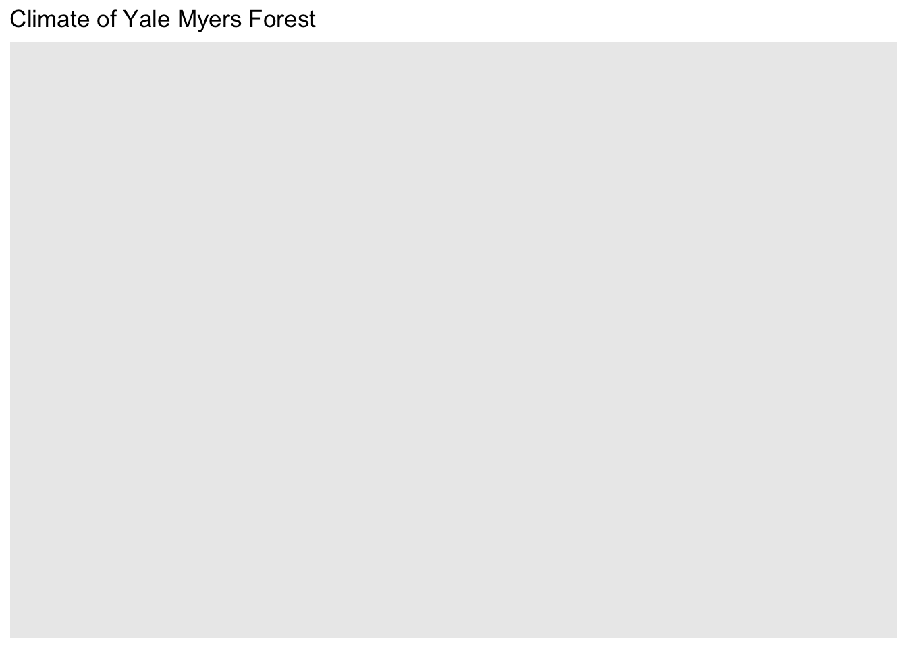
Aesthetic Layer:
The data is used to map onto the aesthetics attributes such as x-axis, y-axis, color, fill, size, labels, alpha, shape, line width, line type.
ggplot(data = Yale.Myers.sub, aes(x = date , y = tmean)) +
labs(title = "Climate of Yale Myers Forest")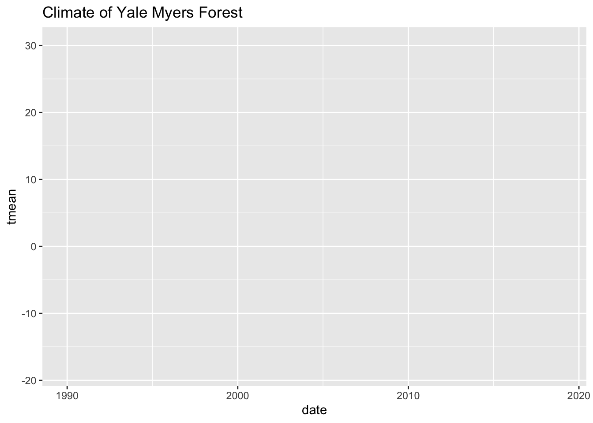
Geometric layer:
The geometric layer controls the essential elements. Display the data using point, line, histogram, bar, or boxplot.
ggplot(data = Yale.Myers.sub, aes(x = date , y = tmean))+
geom_point() +
labs(title = "Climate of Yale Myers Forest",
x = "Date",
y = "Mean Air Temperature (Degrees Celcius)")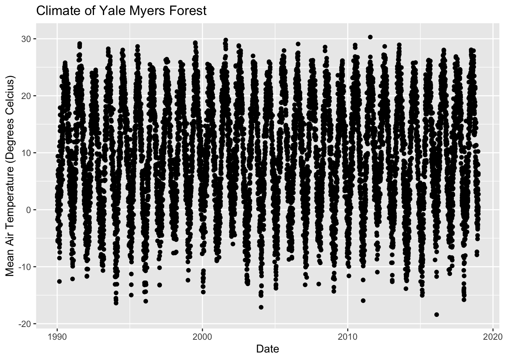
Geometric layer: Adding size, color, and shape.
# Adding size
ggplot(data = Yale.Myers.sub, aes(x = date , y = tmean, size=year))+
geom_point() +
labs(title = 'Climate of Yale Myers Forest',
x = "Date",
y = "Mean Air Temperature (Degrees Celcius)")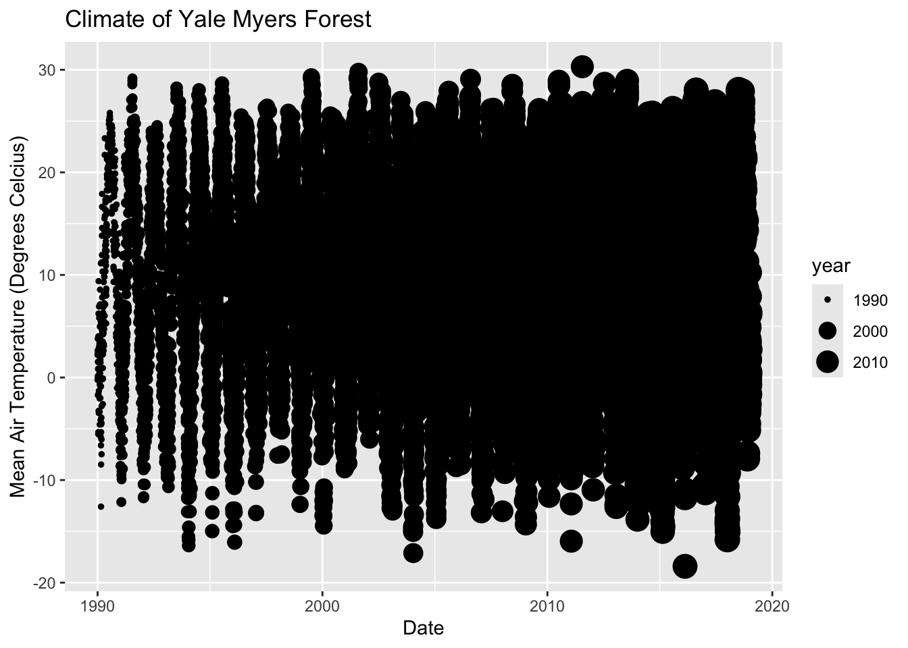
# Adding shape and color
ggplot(data = Yale.Myers.sub, aes(x = date , y = tmean, col=month))+
geom_point() +
labs(title = 'Climate of Yale Myers Forest',
x = "Date",
y = "Mean Air Temperature (Degrees Celcius)")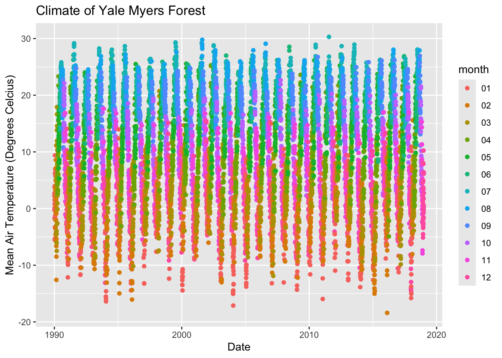
# Histogram plot
ggplot(data = Yale.Myers.sub, aes(x = tmean)) +
geom_histogram(binwidth = 5) +
labs(title = 'Climate of Yale Myers Forest',
x = "Mean Air Temperature (Degrees Celcius)",
y = "Count" )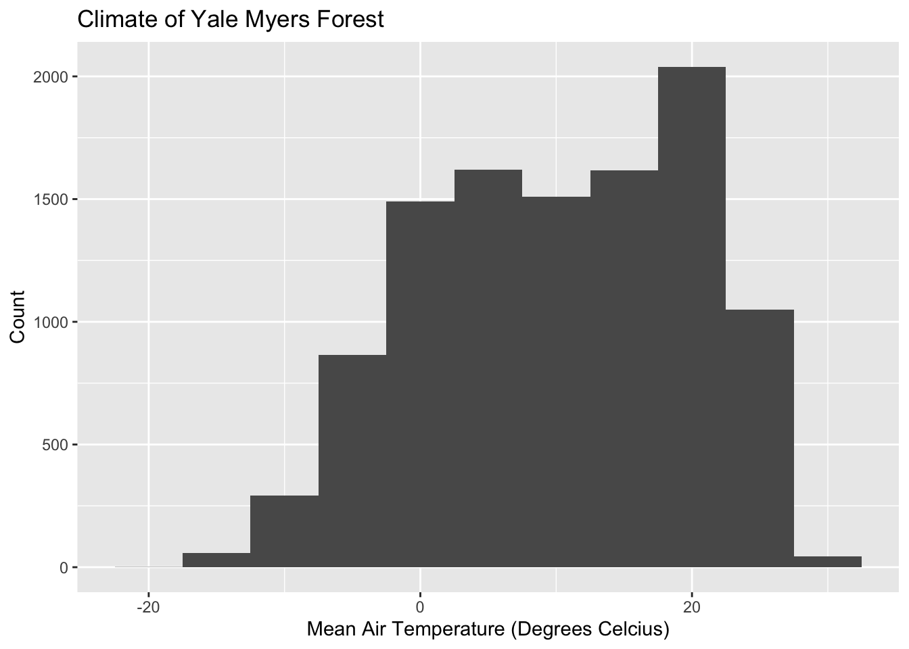
Facet Layer:
The facet layer is used to split the data into subsets of the entire dataset. It allows the subsets to be visualized on the same plot. Here we separate plots according to month.
# Subset dataset to indlude only months 9-11
Yale.Myers.fall <- Yale.Myers.sub %>% filter( month > '08' & month < '12')
p <- ggplot(data = Yale.Myers.fall, aes(x = date , y = tmean)) + geom_point()
p + facet_grid(month ~ .) +
labs(title = 'Climate of Yale Myers Forest',
x = "Date",
y = "Mean Air Temperature (Degrees Celcius)")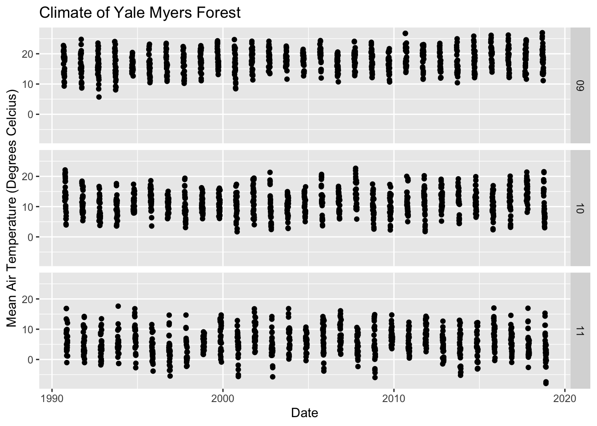
Statistics layer:
We can transform our data using binning, smoothing, descriptive, or intermediate. We will explore how February temperatures have changed from 1990 - 2018
#Subset the data:
Yale.Myers.feb <- Yale.Myers.sub %>% filter( month =='02')
ggplot(data = Yale.Myers.feb, aes(x = date , y = tmean)) + geom_point() +
stat_smooth(method = lm, col = "red") +
labs(title = 'Climate of Yale Myers Forest')`geom_smooth()` using formula = 'y ~ x'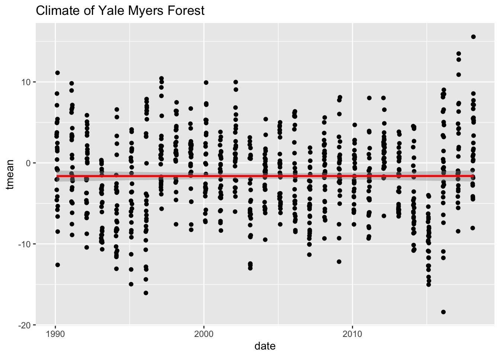
Coordinates layer:
Data coordinates are mapped together to the mentioned plane of the graphic and we adjust the axis and change the spacing of the displayed data with control plot dimensions.
ggplot(data = Yale.Myers.fall, aes(x = tmin , y = tmean)) + geom_point() +
stat_smooth(method = lm, col = "red") +
labs(title = 'Climate of Yale Myers Forest') +
scale_y_continuous(limits = c(-10, 40), expand = c(0, 0)) +
scale_x_continuous(limits = c(-10, 40), expand = c(0, 0)) +
coord_equal() +
labs(title = 'Climate of Yale Myers Forest')`geom_smooth()` using formula = 'y ~ x'Warning: Removed 13 rows containing non-finite outside the scale range
(`stat_smooth()`).Warning: Removed 13 rows containing missing values or values outside the scale range
(`geom_point()`).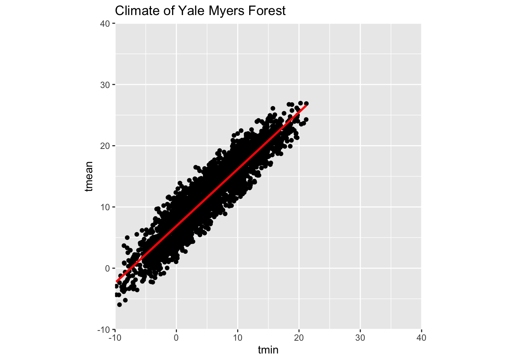
coord_cartesian() to proper zoom in:
# Add coord_cartesian() to proper zoom in
ggplot(data = Yale.Myers.fall, aes(x = tmin , y = tmean)) + geom_point() +
stat_smooth(method = lm, col = "red") +
labs(title = 'Climate of Yale Myers Forest') +
coord_cartesian(xlim = c(-10, 10))`geom_smooth()` using formula = 'y ~ x'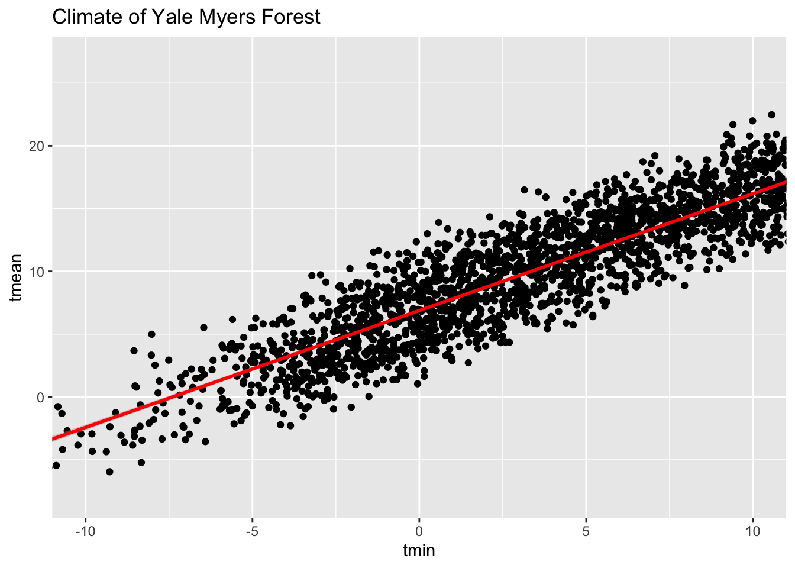
Theme Layer:
Layer controls the finer points of display, like the font size and background color properties.
Example: Theme layer – element_rect() function:
ggplot(data = Yale.Myers.fall, aes(x = tmin , y = tmean)) + geom_point() +
stat_smooth(method = lm, col = "red") +
facet_grid(. ~ month) +
theme(plot.background = element_rect(fill = "blue", colour = "gray")) `geom_smooth()` using formula = 'y ~ x'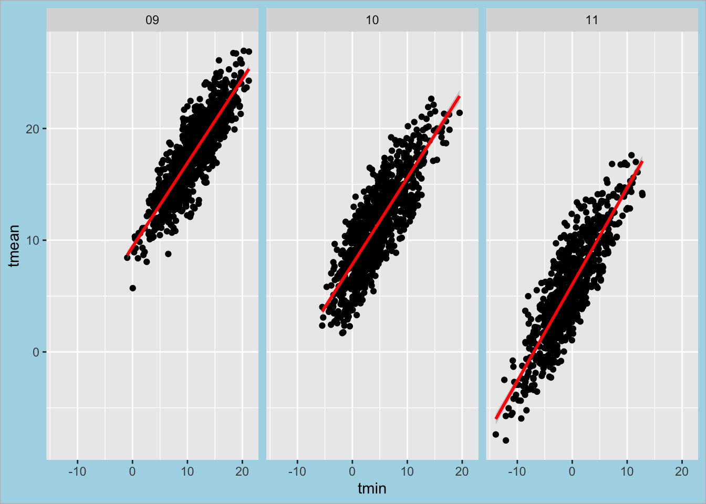
Introduction to Writing Functions in R
Functions are essential tools in R. Functions eliminate repetition from your code, which can reduce your workload, and help you to avoid errors. Here’s what you need to know about creating and calling them. It is very important to understand the purpose and syntax of R functions and knowing how to create or use them. In this tutorial, we’ll learn what an R function is, what types of functions exist in R, when we should use a function, how to create and call a user-defined function.
What Is a function in R?
In R, a function is a set of instructions that performs a specific task. Functions are essential for code organization, reusability, and efficiency. R comes with a variety of built-in functions, and you can also create your own custom functions. The main purpose of creating a user-defined function is to optimize scripts and avoid repetition. A good practice is creating a function whenever you need to run a certain set of commands more than twice.
Built-in Functions in R
Some of the most popular built in function are:
min(),max(),mean(),median(): returns the minimum / maximum / mean / median value of a numeric vectorsum(): returns the sum of a numeric vectorrange(): returns the minimum and maximum values of a numeric vectorabs(): returns the absolute value of a numberstr(): shows the structure of an R objectprint(): displays an R object on the consolencol(): returns the number of columns of a matrix or a dataframelength(): returns the number of items in an R object (a vector, a list, etc.)nchar(): returns the number of characters in a character objectsort(): sorts a vector in ascending or descending (decreasing=TRUE) orderexists():returns TRUE or FALSE depending on whether or not a variable is defined in the R environment
Creating a Function in R
To create a user-defined function in R, we use the keyword function. The syntax is as follows:
function_name <- function(parameters){ function body }
1. Function Name
This is the name of the function object that will be stored in the R environment. After the function is defined, the function name is used for calling that function. It should be concise but clear and meaningful. It is common to use verbs in function names and it is also ok to use a noun if that noun is very descriptive and unambiguous.
2. Function Parameters
Function parameters are the variables in the function definition placed inside the parentheses and separated with a comma that will be set to actual values (called arguments) each time we call the function.
3. Function Body
The function body is a set of commands inside the curly braces that are run in a predefined order every time we call the function. In the function body, we place what exactly we need the function to do. For example, we can create a function to sum two numbers listed as parameters x and y:
sum_two_nums <- function(x, y){
x + y
}
print(sum_two_nums(1, 2))[1] 3Next, lets create a function to calculate the circumference of a circle with a known radius. The function has only one parameter r.
circumference <- function(radius){
2*pi*radius
}After defining the function, call it with the radius equal to 2:
circumference( r=2)[1] 12.56637It’s possible, for a function to have no parameters:
hello_world <- function(){
'Hello, World!'
}
print(hello_world())[1] "Hello, World!"Also, some parameters can be set to default values inside the function definition, which then can be reset when calling the function. In the circumference function, we can set the default radius of a circle to 1. If we call the function with no argument passed, it will calculate the circumference of a circle with a radius of 1. Otherwise, it will calculate the circumference of a circle with the provided radius:
circumference <- function(r=1){
2*pi*r
}
print(circumference())[1] 6.283185print(circumference( r=2))[1] 12.56637Note that the statements in the function body should be indented by 2 or 4 spaces, depending on the IDE where we run the code. The important thing is to be consistent with the indentation throughout the program. While it doesn’t affect the code performance, it makes the code easier to read.
return()
As we saw from all the above examples, in R, it usually isn’t necessary to explicitly include the return statement when defining a function since an R function just automatically returns the last evaluated expression in the function body. However, we still can add the return statement inside the function body using the syntax return(expression_to_be_returned). This becomes important if we need to return more than one result from a function. For example:
mean_median <- function(vector){
mean <- mean(vector)
median <- median(vector)
return(c(mean, median))
}
print(mean_median(c(1, 1, 1, 2, 3)))[1] 1.6 1.0Note that in the return statement above, we actually return a vector containing the necessary results, and not just the variables separated by a comma. The return() function can return only a single R object. Instead of a vector, we could also return a list, especially if the results to be returned are supposed to be of different data types.
Calling a Function in R
In all the above examples, we called the created functions by using the function name and adding the necessary arguments inside the parenthesis. In R, function arguments can be passed by position, by name (so-called named arguments), by mixing position-based and name-based matching, or by omitting the arguments altogether.
If we pass the arguments by position, we need to follow the same sequence of arguments as defined in the function:
subtract_two_nums <- function(x, y){
x - y
}
print(subtract_two_nums(3, 1))[1] 2In the above example, x is equal to 3 and y to 1, and not vice versa.
If we pass the arguments by name, i.e., explicitly specify what value each parameter defined in the function takes, the order of the arguments doesn’t matter:
subtract_two_nums <- function(x, y){
x - y
}
print(subtract_two_nums(x=3, y=1))[1] 2print(subtract_two_nums(y=1, x=3))[1] 2Things to remember when using functions inside other functions: - Functions can have default values for arguments. - Functions can return multiple values using a list or other data structures. - You can use the return() statement to specify the value to be returned by the function. - If you want to be able to use the function independent of another function, it should be created outside a function instead of nesting the functions.
Post-Workshop Assessment:
The standard error measures the precision of the estimate of the sample mean. Write a function to calculate the standard error. Use this function when comparing mean monthly temperature values between Yale-Myers and a chosen location.
Find a location of interest within the USA in google earth (https://earth.google.com/) and record the latitude and longitude in decimal degrees. Next, download Daymet data for that location. subset tmean in both datasets, calculate the mean monthly and standard error of tmean (SE) for both locations. Create a figure comparing mean monthly and the standard error of tmean at both locations.
Create figures and text to show the following:
- Differences in monthly tmean, and standard error in tmean for both locations.
- Differences in monthly precipitation (prcp), and standard error in prcp for both locations.
- Differences in monthly minimum temperature (tmin), and standard error in tmin for both locations.
- Differences in monthly maximim temperature (tmax), and standard error in tmax for both locations.
- Why are the two locations similar or different?
- Create an Rmarkdown report to upload to canvas (save as a pdf): https://hbctraining.github.io/Training-modules/Rmarkdown/lesson.html